Tabliato repose sur le logiciel libre Lilypond. Cependant Lilypond ne peut pas faire de tablature d'accordéon nativement. Tabliato permet de contruire un fichier lilypond complexe et spécifique à l'accordéon diatonique et ensuite Lilypond se charge de produire un résultat visuel. Ainsi l'essentiel de la syntaxe musicale de Lilypond reste valable dans Tabliato. Ce manuel décrit la syntaxe spécifique de Tabliato et les bases utiles de Lilypond.
Tout est géré par Tabliato dans l'interface graphique. Indiquez grâce aux listes déroulantes les options de votre partition. Une liste déroulante est paticulièrement importante: le rythme. Cette information permet de générer automatiquement la plupart des informations d'accompagment sans avoir à les écrires explicitements. C'est ce que nous verrons dans les prochaines sections.

La façon la plus simple d'écrire une tablature est d'utiliser le nom des boutons. Pour écrire un bouton il faut écrire son numéro suivi d'une apostrophe « ' » si c'est un bouton de la seconde rangée. Pour indiquer si le sens de jeu est poussé ou tiré on ajoute un « p » ou un « t » devant la note. Exemple :
p5'Il n'est pas nécessaire de le répéter à chaque fois. Tant qu'on joue dans le même sens la lettre s'applique aux autres notes. Exemple :
t7 8 7' 9 9 p6 7 6' 8 8
La syntaxe est très libre: minuscule, majuscule avec ou sans espace. Tabliato détecte un 'p' ou un 't' et comprend que tout ce qui suit est poussé ou tiré.
Enfin il faut spécifier la durée de la note: ronde, blanche, noire, croche, etc. Dans lilypond une ronde est notée 1, une blanche 2, une noire 4, une croche 8, etc. Dans tabliato, comme les chiffres sont déjà utilisés pour nommer les boutons il faut ajouter le symbole « : » suivi de la valeur pour ne pas que la durée soit interprétée comme un bouton. De même il n'est pas besoin de répéter cette valeur tant qu'elle ne change pas. Exemple :
t7:4 8 7' 9:2 9:4 p6 7 6' 8:2 8:4
Pour les notes pointées, il suffit d'ajouter un point à la valeur du temps. Exemple :
p5':4.L'autre façon d'écrire une tablature consiste à écrire les notes. Cette méthode est un peu plus compliquée car si à chaque bouton correspond une unique note, à chaque note peuvent correspondre plusieurs boutons sur différentes rangées ou dans différents sens de jeu. L'utilisateur doit donc faire des choix.
Dans lilypond les notes s'écrivent avec la notation anglaise c d e f g a b suivit de une ou plusieurs apostrophes « ' » pour indiquer l'octave. Pour obtenir un dièse ou un bécarre on ajoute « is » ou « es » au nom de la note. Par example « cis'' » pour un do dièse deuxième octave.
Dans l'example suivant on écrit la game de do majeur. On voit que le rendu de la tablature est souvent rouge. Cela indique qu'il y a plusieurs options de jeu possible. En effet nous n'avons pas indiqué de sens de jeu ou de rang ainsi tabliato montre toutes les options tirées et pousées rang 1 et rang 2. On note cependant que le fa apparait noir en tiré sur le boutont 4' car c'est l'unique option.
c' d' e' f' g' a' b' c''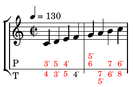
Pour réduire le nombre d'options on peut commencer par indiquer un sens de jeu avec les lettres 'p' et 't'. Dans l'exemple suivant on indique qu'on veut jouer en poussé. Cependant ca ne change rien pour le fa et le la qui ne peuvent être joués que en tiré.
p c' d' e' f' t g' a' b' c''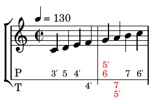
Et voici en tiré :
t c' d' e' f' t g' a' b' c''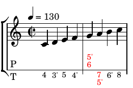
Il nous reste deux notes rouges car il y a deux options sur les rangs 1 et 2. Pour ce faire on ajoute une indication de rang avec « / »
t c' d' e' f' t g'/1 a'/1 b' c''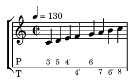
Un fois qu'on a indiqué un sens de jeu, cela s'applique à toutes les notes qui suivent jusqu'à ce qu'une autre indication soit rencontrée. La commande '\pt' permet d'annuler le sens de jeu pour réafficher toutes les options. Exemple:
t c' d' e' f' g'/1 a'/1 b' c''
\pt c'' d'' e'' f'' g'' a'' b'' c'''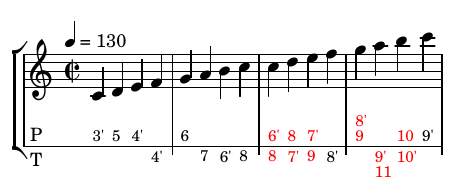
Les durées s'indiquent de la même façon avec le symbole « : » suivi de la valeur de la durée et il est tout à fait possible de mélanger noms de notes et noms de boutons.
Pour chaque mesure l'accompagnement s'écrit entre crochets « [ ] ». Il y a 3 façons d'écrire l'accompagnement de la main gauche. La syntaxe automatique, semi-automatique et manuelle. Le but étant d'écrire le moins de symbole possible et de laisser tabliato interpréter automatiquement.
La syntaxe automatique est la plus simple il suffit d'écrire, en majuscule et pour chaque mesure, la lettre des accords (nomenclature anglaise couramment utilisée en accordéon) et tabliato interprète automatiquement en fonction du motif rythmique de la pièce. Dans l'exemple suivant le motif choisit étant Basse accord accord:
t7:4 8 7' A
9:2 9:4 A
p6 7 6' G
8:2 8:4 G
Ici pas de crochets [ ] car les lettres majuscules ne peuvent pas être confondues avec autre chose donc tabliato « sait » qu'il s'agit de l'accompagment. Cependant écrire « [A] » fonctionne aussi.
La syntaxe automatique est très pratique puisqu'elle permet de n'écrire qu'une seule lettre et interprète automatiquement la correspondance rythmique. Cependant cette syntaxe est limitée et ne permet pas d'avoir des accords différents dans une même mesure. Dans ce cas la syntaxe semi-automatique permet un plus grande flexibilité. Exemple :
t7:4 8 7' [A a f]
9:2 9:4 A
p6 7 6' [G g e]
8:2 8:4 G
Ici les crochets sont nécéssaires car sinon a, f, g et e sont interprétés comme des notes dans la mélodie.
La syntaxe semi-automatique interprète aussi plusieurs lettres majuscules comme étant plusieurs sous parties d'un même motif rythmique d'une même mesure. Dans l'exemple suivant, en 6/8 avec un motif rythmique « B aB a », à la mesure 1 on accompagne avec des la. Le A est interprété A aA a. Cependant à la mesure 2 [G A] n'est pas interprété « G gG gA aA a » mais bien « G gA a » car il s'agit d'une seule mesure. Notez que [G g A a] aurait donné le même résultat avec deux lettres en plus.
t8:8 8 8 8 6' 8 A
p 8 6' 8 7':4 7':8 [G A]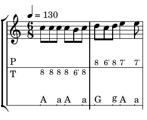
La syntaxe semi-automatique, dans de rares cas, ne suffit pas. Dans ce cas la syntaxe manuelle permet une liberté totale sans contrainte de motif. Chaque lettre doit être suivie d'une durée. Exemple :
t7:4 8 7' [A:2 a:4]
9:2 9:4 [A:8 a:8 a:8 A:8 a:4]
p6 7 6' G
8:2 8:4 [G:4 r2]
Cette façon de faire et assez laborieuse et ne doit donc être utilisée que localement à des endroits spécifiques mais jamais sur une tablature complète.
t <7 8 9>:2 <7 8 9>:4 A
<7 8 8'>:2 <7 8 8'>:4 A
p <6 7 8>:2 <6 7 8>:4 G
<6 7 7'>:2 p<6 7 7'>:4 G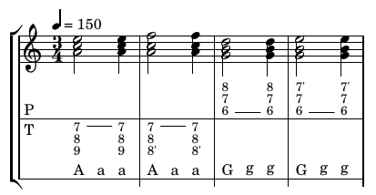
Les silences s'écrivent « r » suivi de la durée, notifiée sur le même principe que les notes.
t7:4 8 r A
9:2 9:4 A
p6 r:2 G
8:2 8:4 G
Les répétitions s'indiquent avec le mot clé « \repeat volta » suivi du nombre de répétitions :
\repeat volta 2
{
t7:4 8 7' A
9:2 9:4 A
p6 7 6' G
8:2 8:4 G
}
Une fin alternative s'écrit comme suit : on indique qu'il va y avoir une répétition puis on omet la dernière mesure que l'on place dans \alternative. S'il y a trois répétitions on peut bien sûr mettre trois alternatives.
\repeat volta 2
{
t7:4 8 7' A
9:2 9:4 A
p6 7 6' G
}
\alternative
{
{ p8:2 8:4 G }
{ 8:2 t7:4 G }
}
Si la mise en page automatique ne vous convient pas, vous pouvez forcer un retour à la ligne en ajoutant le mot \break. Dans ce cas la ligne va occuper toute la place disponible même si elle est courte :
t7:4 8 7' A
9:2 9:4 A
\break
p6 7 6' G
p8:2 8:4 GLe mesures incomplètes s'annoncent avec le mot clé « \partial » suivi du nombre de temps. L'accompagnement doit alors être en syntaxe manuelle car la mesure est incomplète et ne peut/doit pas être interprétée avec le motif rythmique. Ici un A sur une noire pour l'exemple mais en général on trouvera plutôt un silence :
\partial 2*8 p7:8 7:8 [A:4]
t7:4 8 7' A
9:2 9:4 A
p6 7 6' G
p8:2 8:4 G
Les liaisons de prolongation s'écrivent avec un « ~ » :
t7:4 8 7' A
9:2 ~ 9:4 A
p6 7 6' G
p8:2 8:4 G
Les liaisons d'articulation et de phrasé s'écrivent avec des parenthèses :
t7:4 8 7' A
( 9:2 ) 9:4 A
p6 7 ( 6' ) G
p8:2 8:4 G
\motif [B:4. a:4 a:4]
t8:8 6' 7 8 6' 7 6':16 8 A
7':4 7:8 7':4 7' D
7':8 9 8' 9 7' 8 7' G
p7':4 t8':8 p7':4 7' C

On trouve parfois des pièces avec des basses tenues sur toute la mesure. Ceci ne se trouve pas non plus dans le menu déroulant. On peut employer la commande de motif dans ce cas aussi.
\motif [B:2.]
t8:8 8 8 8 6' 8 A
p 8 6' 8 7':4 7':8 G
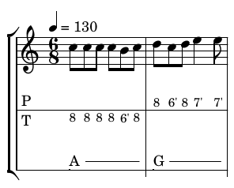
\p8:4\3 6':8 7 t7:4.\2 5:8\1 [G A]
t7:4\2 p7 t8 p7 [A:4 G:4 F:4 E:4]
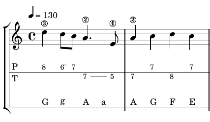
Certaines tablatures indiquent parfois une lettre plutôt qu'un numéro de doigt. "i" pour index, "m" pour le majeur, "a" pour l'annulaire et "o" pour l'auriculaire. Pour cela on peut utiliser la commande « \finger » de lilypond.p8:4 \finger "a" 6':8 7 t7:4. \finger "m" 5:8 \finger "i" [G A]
t7:4 \finger "m" p7 t8 p7 [A:4 G:4 F:4 E:4]
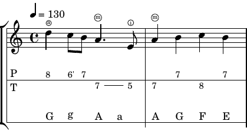
Tout ce que le logiciel lilypond sait faire tabliato doit savoir le faire aussi car sous le capos c'est lilypond qui génère le rendu. Je ne l'ai personnellement jamais utilisé ni vu utilisé sur des tablatures d'accordéon diatonique qui sont en général des partitions très simples. Pour écrire des choses plus complexes veuillez vous référer à la documentation de Lilypond. Par exemple nous pouvons controler les associations de notes.
\motif [B:4. a:4 a:4]
\set Timing.beamExceptions=#'()
\set Timing.beatStructure=3,3,2
t8:8 6' 7 8 6' 7 6':16 8 A
7':4 7:8 7':4 7' D
7':8 9 8' 9 7' 8 7' G
p7':4 t8':8 p7':4 7' C
Nous pouvons aussi écrire des triolets avec « \tuplet 3/2 »
\set Timing.beamExceptions=#'()
\set Timing.beatStructure=1,1,1
t8:4 8' 9 F
p8:4 \tuplet 3/2 { 6':8 8 6' } \tuplet 3/2 { 7 6' 7 } E
t7:8 5 7 6' 8 7' A
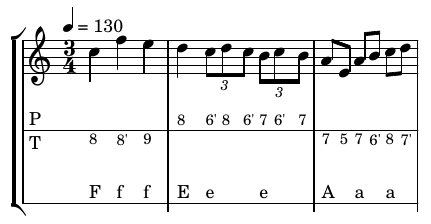